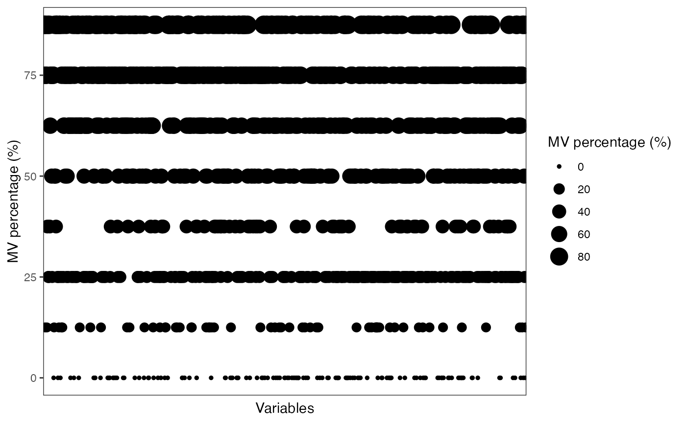
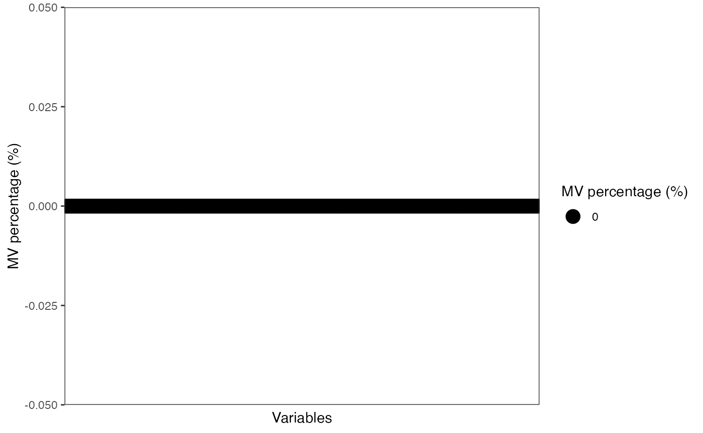
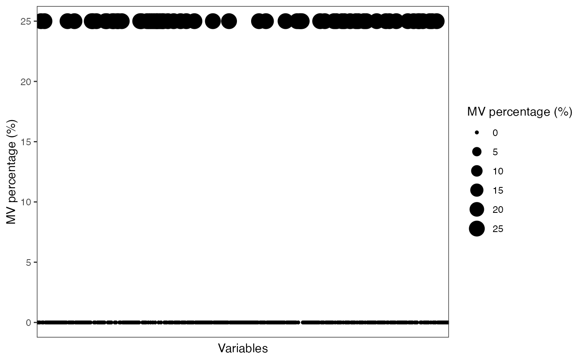
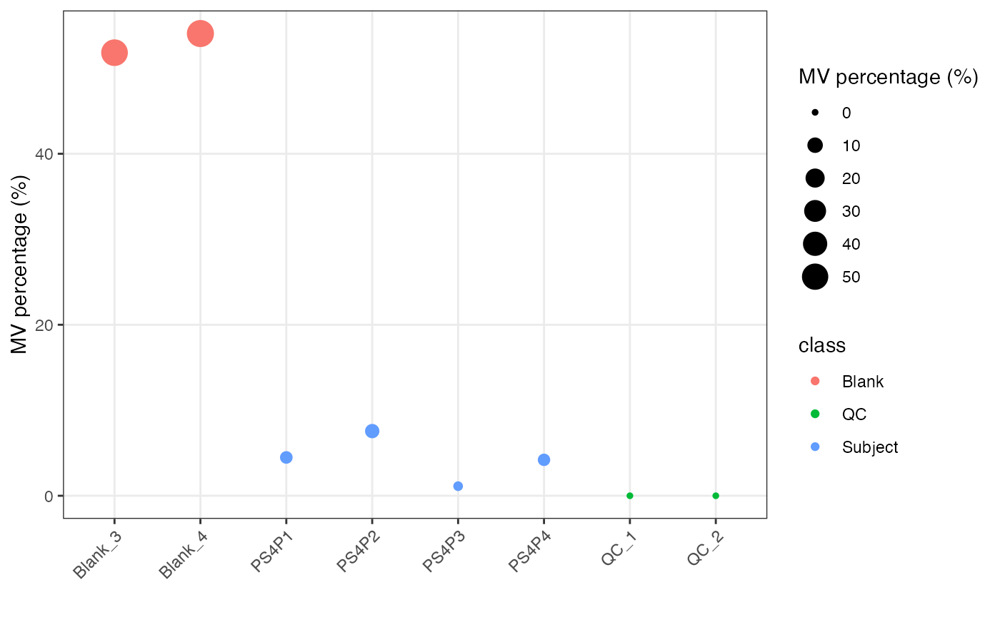

Filter noisy variables and outlier samples
Xiaotao Shen (https://www.shenxt.info/)
Created on 2020-04-01 and updated on 2022-01-06
Source:vignettes/filter_variable_outlier.Rmd
filter_variable_outlier.RmdIntroduction
We can use masscleaner to remove noisy features and outlier samples.
First, we need to prepare samples for masscleaner.
Data preparation
data("expression_data")
data("sample_info")
data("variable_info")
object =
create_mass_dataset(
expression_data = expression_data,
sample_info = sample_info,
variable_info = variable_info
)
object
#> --------------------
#> massdataset version: 0.99.1
#> --------------------
#> 1.expression_data:[ 1000 x 8 data.frame]
#> 2.sample_info:[ 8 x 4 data.frame]
#> 3.variable_info:[ 1000 x 3 data.frame]
#> 4.sample_info_note:[ 4 x 2 data.frame]
#> 5.variable_info_note:[ 3 x 2 data.frame]
#> 6.ms2_data:[ 0 variables x 0 MS2 spectra]
#> --------------------
#> Processing information (extract_process_info())
#> create_mass_dataset ----------
#> Package Function.used Time
#> 1 massdataset create_mass_dataset() 2022-01-06 23:31:09
get_mv_number(object)
#> [1] 3829
massdataset::get_mv_number(object, by = "sample")
#> Blank_3 Blank_4 QC_1 QC_2 PS4P1 PS4P2 PS4P3 PS4P4
#> 682 702 397 381 424 427 405 411
head(massdataset::get_mv_number(object, by = "variable"))
#> M136T55_2_POS M79T35_POS M307T548_POS M183T224_POS M349T47_POS
#> 2 2 3 6 2
#> M182T828_POS
#> 1
massdataset::get_mv_number(object, by = "sample", show_by = "percentage")
#> Blank_3 Blank_4 QC_1 QC_2 PS4P1 PS4P2 PS4P3 PS4P4
#> 0.682 0.702 0.397 0.381 0.424 0.427 0.405 0.411
head(massdataset::get_mv_number(object, by = "variable"), show_by = "percentage")
#> M136T55_2_POS M79T35_POS M307T548_POS M183T224_POS M349T47_POS
#> 2 2 3 6 2
#> M182T828_POS
#> 1Filter noisy features
Remove variables who have mv in more than 20% QC samples.
show_variable_missing_values(object = object, percentage = TRUE)
qc_id =
object %>%
activate_mass_dataset(what = "sample_info") %>%
filter(class == "QC") %>%
pull(sample_id)
subject_id =
object %>%
activate_mass_dataset(what = "sample_info") %>%
filter(class == "Subject") %>%
pull(sample_id)
object =
object %>%
mutate_variable_na_freq(according_to_samples = qc_id) %>%
mutate_variable_na_freq(according_to_samples = subject_id) %>%
activate_mass_dataset(what = "variable_info") %>%
filter(na_freq < 0.2 & na_freq.1 < 0.5)
object
#> --------------------
#> massdataset version: 0.99.1
#> --------------------
#> 1.expression_data:[ 357 x 8 data.frame]
#> 2.sample_info:[ 8 x 4 data.frame]
#> 3.variable_info:[ 357 x 5 data.frame]
#> 4.sample_info_note:[ 4 x 2 data.frame]
#> 5.variable_info_note:[ 5 x 2 data.frame]
#> 6.ms2_data:[ 0 variables x 0 MS2 spectra]
#> --------------------
#> Processing information (extract_process_info())
#> create_mass_dataset ----------
#> Package Function.used Time
#> 1 massdataset create_mass_dataset() 2022-01-06 23:31:09
#> mutate_variable_na_freq ----------
#> Package Function.used Time
#> 1 massdataset mutate_variable_na_freq() 2022-01-06 23:31:09
#> 2 massdataset mutate_variable_na_freq() 2022-01-06 23:31:09
#> filter ----------
#> Package Function.used Time
#> 1 massdataset filter() 2022-01-06 23:31:09
show_variable_missing_values(object = object[,qc_id],
percentage = TRUE)
show_variable_missing_values(object = object[,subject_id],
percentage = TRUE)
Filter outlier samples
We can use the detect_outlier() to find the outlier samples.
massdataset::show_sample_missing_values(object = object,
color_by = "class",
percentage = TRUE)
Detect outlier samples.
##Blank samples are not outlier samples
non_blank_id =
object %>%
activate_mass_dataset(what = "sample_info") %>%
filter(class != "Blank") %>%
pull(sample_id)
outlier_samples =
object[,non_blank_id] %>%
log() %>%
scale() %>%
detect_outlier()
outlier_samples
#> --------------------
#> masscleaner
#> --------------------
#> 1 according_to_na : 0 outlier samples.
#> 2 according_to_pc_sd : 0 outlier samples.
#> 3 according_to_pc_mad : 1 outlier samples.
#> QC_2 .
#> 4 accordint_to_distance : 1 outlier samples.
#> QC_2 .
#> extract all outlier table using extract_outlier_table()
#>
outlier_table =
extract_outlier_table(outlier_samples)
###MV plot
massdataset::show_sample_missing_values(object = object[,non_blank_id],
color_by = "class",
percentage = TRUE) # Session information
# Session information
sessionInfo()
#> R version 4.1.0 (2021-05-18)
#> Platform: x86_64-apple-darwin17.0 (64-bit)
#> Running under: macOS Big Sur 10.16
#>
#> Matrix products: default
#> BLAS: /Library/Frameworks/R.framework/Versions/4.1/Resources/lib/libRblas.dylib
#> LAPACK: /Library/Frameworks/R.framework/Versions/4.1/Resources/lib/libRlapack.dylib
#>
#> locale:
#> [1] en_US.UTF-8/en_US.UTF-8/en_US.UTF-8/C/en_US.UTF-8/en_US.UTF-8
#>
#> attached base packages:
#> [1] stats graphics grDevices utils datasets methods base
#>
#> other attached packages:
#> [1] forcats_0.5.1 stringr_1.4.0 dplyr_1.0.7 purrr_0.3.4
#> [5] readr_2.0.0 tidyr_1.1.3 tibble_3.1.3 ggplot2_3.3.5
#> [9] tidyverse_1.3.1 magrittr_2.0.1 tinytools_0.9.1 massdataset_0.99.1
#> [13] masscleaner_0.9.2
#>
#> loaded via a namespace (and not attached):
#> [1] colorspace_2.0-2 rjson_0.2.20 ellipsis_0.3.2
#> [4] class_7.3-19 leaflet_2.0.4.1 rprojroot_2.0.2
#> [7] circlize_0.4.14 GlobalOptions_0.1.2 fs_1.5.0
#> [10] clue_0.3-59 rstudioapi_0.13 proxy_0.4-26
#> [13] farver_2.1.0 ggrepel_0.9.1 lubridate_1.7.10
#> [16] mvtnorm_1.1-2 fansi_0.5.0 xml2_1.3.2
#> [19] codetools_0.2-18 doParallel_1.0.16 cachem_1.0.5
#> [22] impute_1.66.0 robustbase_0.93-8 knitr_1.33
#> [25] itertools_0.1-3 jsonlite_1.7.2 Cairo_1.5-12.2
#> [28] broom_0.7.9 dbplyr_2.1.1 cluster_2.1.2
#> [31] png_0.1-7 missForest_1.4 BiocManager_1.30.16
#> [34] rrcov_1.6-0 compiler_4.1.0 httr_1.4.2
#> [37] backports_1.2.1 rvcheck_0.1.8 assertthat_0.2.1
#> [40] fastmap_1.1.0 lazyeval_0.2.2 cli_3.0.1
#> [43] htmltools_0.5.2 tools_4.1.0 gtable_0.3.0
#> [46] glue_1.4.2 Rcpp_1.0.7 Biobase_2.52.0
#> [49] cellranger_1.1.0 jquerylib_0.1.4 pkgdown_2.0.1
#> [52] vctrs_0.3.8 iterators_1.0.13 crosstalk_1.1.1
#> [55] xfun_0.24 rvest_1.0.1 openxlsx_4.2.4
#> [58] lifecycle_1.0.0 DEoptimR_1.0-9 MASS_7.3-54
#> [61] scales_1.1.1 ragg_1.1.3 pcaMethods_1.84.0
#> [64] clisymbols_1.2.0 hms_1.1.0 parallel_4.1.0
#> [67] RColorBrewer_1.1-2 ComplexHeatmap_2.8.0 yaml_2.2.1
#> [70] memoise_2.0.0 pbapply_1.4-3 sass_0.4.0
#> [73] stringi_1.7.3 highr_0.9 S4Vectors_0.30.0
#> [76] desc_1.3.0 pcaPP_1.9-74 foreach_1.5.1
#> [79] randomForest_4.6-14 e1071_1.7-8 BiocGenerics_0.38.0
#> [82] zip_2.2.0 BiocParallel_1.26.1 shape_1.4.6
#> [85] rlang_0.4.11 pkgconfig_2.0.3 systemfonts_1.0.2
#> [88] matrixStats_0.60.0 evaluate_0.14 lattice_0.20-44
#> [91] labeling_0.4.2 patchwork_1.1.1 htmlwidgets_1.5.3
#> [94] tidyselect_1.1.1 robust_0.6-1 ggsci_2.9
#> [97] plyr_1.8.6 R6_2.5.0 IRanges_2.26.0
#> [100] snow_0.4-3 generics_0.1.0 fit.models_0.64
#> [103] DBI_1.1.1 withr_2.4.2 haven_2.4.1
#> [106] pillar_1.6.2 modelr_0.1.8 crayon_1.4.1
#> [109] utf8_1.2.2 plotly_4.9.4.1 tzdb_0.1.2
#> [112] rmarkdown_2.9 GetoptLong_1.0.5 grid_4.1.0
#> [115] readxl_1.3.1 data.table_1.14.0 reprex_2.0.0
#> [118] digest_0.6.27 gridGraphics_0.5-1 textshaping_0.3.6
#> [121] stats4_4.1.0 munsell_0.5.0 viridisLite_0.4.0
#> [124] ggplotify_0.0.8 bslib_0.3.1